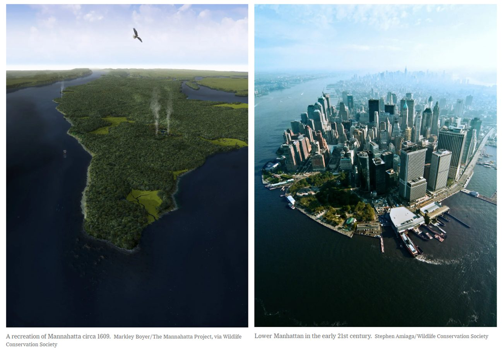

M06Complex Socio-economic Issues and Sustainable Innovations
Lecture 18 · Urban ecosystems and resilience
Class Exercise 18
Look at a city's past. Then plan for its next storm.
18Check in
Check in
Enter today's code
Your instructor shows a code on screen at the start of class. Checking in counts toward your participation grade.
18Exercise 1 of 3 · Then and now
Class exercise · work with a neighbor · about 10 minutes
Manhattan, then and now
Look at the two pictures. An ecosystem service is a free benefit that nature gives people, such as clean air or clean water.

18Exercise 2 of 3 · Storm plan
Class exercise · work with a neighbor · about 12 minutes
Plan for a storm surge
A hurricane is pushing seawater into a coastal city. Pick one fix from each column. Resilience means a city can take a hit and keep working.
Social
People and rules
Ecological
Living things and soil
Technical
Built things and machines
18Exercise 3 of 3 · City metabolism
Class exercise · work with a neighbor · about 10 minutes
Close a loop in your city
Think of the city or town you know best. Urban metabolism means the water, energy and materials that flow into a city and the waste that flows out.
18Exit ticket
Exit ticket · counts for participation